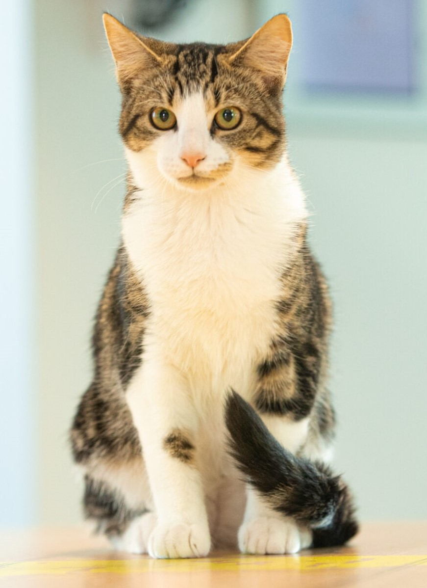
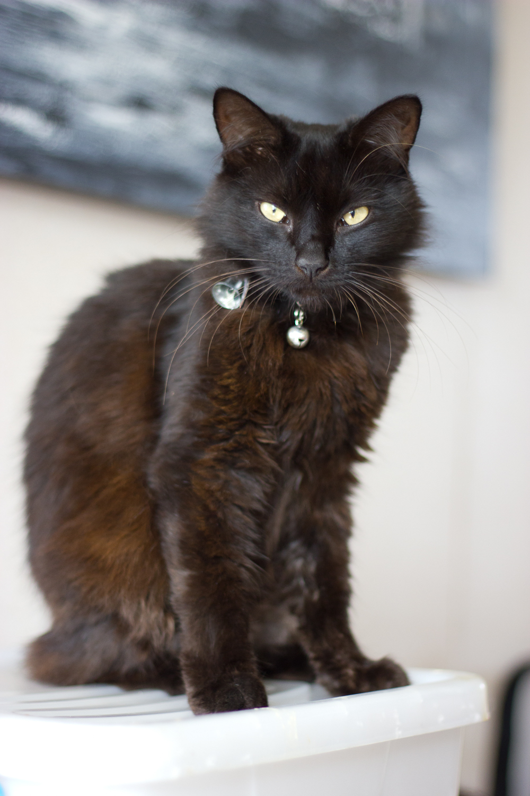
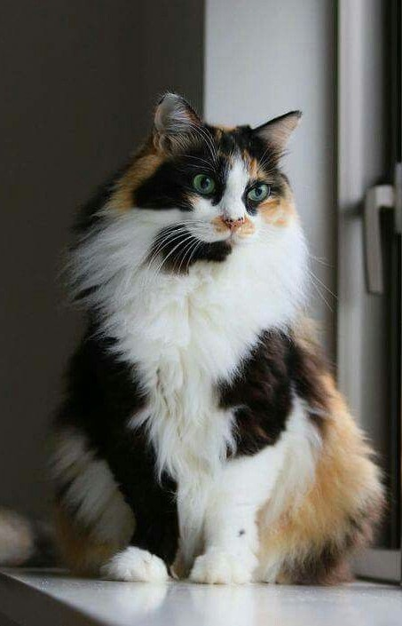

There are a variety of different cat breeds in the world!
Before we dive into cat breeds, it's important to understand how they came about. Research suggests some of the African Wildcat began living among farming communities near the Fertile Crescent roughly 10,000 years ago due to the abundance of prey, such as rodents. Since most cat breeds are a fairly recent invention 95% to 97% of cats are "random-bred" while the remaining 3% to 5% are "pedigree" cats.
When humans began breeding cats, they took these "random-bred" or moggies (same meaning as mutt but for cats) with interesting traits such as long hair or folded ears and selectively bred them to create a standard for these traits. For example, the American Curl's curled ears or the flat face of the Persian.
Understanding cat breeds and genetic are important because well, knowledge is power. Without papers, your cat may look like a Siamese but in reality is just a Domestic Shorthair with colorpoint markings. Cat breeds are very young compared to that of dog breeds that have been bred for centuries so it is very possible for certain traits, like blue fur or those pointed patterns mentioned before, to occur naturally in the general population without having a smidge of that breed's DNA.
Although some simply call non-pedigree cats "moggies," most of them are officially classified by their coat length: Domestic Shorthair, Medium-Hair, or Longhair.
Domestic Shorthair

Domestic Medium Hair

Domestic Longhair
